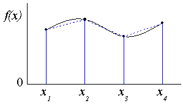
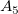
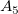
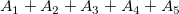

Integration
Math-Integrate
Beschreibung

Das Hilfsmittel Integration führt eine numerische Integration für die aktive Datenzeichnung mit Hilfe der Trapezregel durch. Sie können wählen zwischen der Berechnung einer Mathematischen Fläche (die algebraische Summe der Trapeze) oder einer Absoluten Fläche (die Summe der absoluten Trapezwerte). Fehlende Werte werden ignoriert.
Hilfsmittel Integration verwenden
- Öffnen Sie ein neues Arbeitsblatt mit Eingabedaten.
- Markieren Sie ausgewählte Daten.
- Wählen Sie Analyse: Mathematik: Integrieren im Origin-Menü, um das Dialogfeld Integ1 zu öffnen.
Die X-Funktion Integ1 wird aufgerufen, um die Berechnung durchzuführen. Der Anwender hat die Möglichkeit, Fläche, Peakkoordinaten, Peakbreite und Peakhöhe (maximale Abweichung von der X-Achse) in das Ergebnisprotokoll zu schreiben. Zusätzlich können Sie wählen, ob Sie mit Hilfe einer einfachen, durch eine Gerade definierten Basislinie, die die Endpunkte der Kurve verbindet, eine Integration durchführen möchten und ob eine Zeichnung der Integralkurve erstellt werden soll.
Dialogoptionen
| Ausgabe Ergebnisprotokoll |
Wählen Sie, ob Fläche, Peakkoordinaten, Peakbreite und Peakhöhe im Ergebnisprotokoll ausgegeben werden sollen. |
| Neu berechnen |
Bedienelemente zur Neuberechnung der Analyseergebnisse
Weitere Informationen finden Sie unter Analyseergebnisse neu berechnen.
|
| Eingabe |
Legt die zu integrierenden Eingabedaten fest.
Hilfe zum Festlegen von Bereichen finden Sie hier: Eingabedaten festlegen
|
| Verwenden der Geraden der Endpunkte als Basislinie |
Legt fest, ob eine Gerade zwischen den Endpunkten erstellt und als Basislinie für die Integration verwendet werden soll.
|
| Flächentyp |
Legen Sie den Integralflächentyp fest. Einzelheiten lesen Sie bitte unten im Abschnitt zum Algorithmus nach.
-
Mathematische Fläche
- Die Fläche ist die algebraische Summe der Trapeze.
-
Absolute Fläche
- Die Fläche ist die Summe der absoluten Trapezwerte.
|
| Auszugebende Eigenschaften |
Legen Sie die auszugebenden Eigenschaften fest, wenn das Kontrollkästchen Integrationsergebnis aktiviert ist (siehe unten).
-
Datensatzidentifizierer
- Wählen Sie einen Datensatzidentifizierer, der verwendet wird, wenn das Kontrollkästchen Integrationsergebnis aktiviert ist.
-
Anfang des Zeilenindex
- Legen Sie fest, ob der Anfangszeilenindex ausgegeben wird.
-
Ende des Zeilenindex
- Legen Sie fest, ob der Endzeilenindex ausgegeben wird.
-
Anfang X
- Legen Sie fest, ob der Anfangswert von X ausgegeben wird.
-
Ende X
- Legen Sie fest, ob der Endwert von X ausgegeben wird.
-
Max. Höhe
- Legen Sie fest, ob die maximale Höhe, die aus der Basislinie errechnet wurde, ausgegeben werden soll.
-
X bei max. Höhe
- Legen Sie fest, ob der X-Wert, der der maximalen Höhe entspricht, ausgegeben werden soll.
-
Fläche
- Legen Sie fest, ob die Integrationsfläche ausgegeben wird.
-
Halbwertsbreite
- Legen Sie fest, ob die Peakbreite auf halber Höhe der Quellkurve ausgegeben werden soll.
Hinweis: Die X-Werte für Anfang und Ende und die integrierte Fläche werden in der Zeile Kommentare der Spalte mit den Integrationsergebnissen ausgegeben, unabhängig davon, ob die Ausgabeeigenschaften Anfang X, Ende X und Fläche aktiviert sind.
|
| Integralkurvendaten |
Legt den Bereich der Ausgabe des kumulativen Ergebnisses fest.
|
| Integrationsergebnis |
Legt fest, ob das Integrationsergebnis in einem Berichtsblatt ausgegeben werden soll.
|
| Integralkurve zeichnen |
Bestimmen Sie, ob und wo die Integralkurve gezeichnet werden soll.
-
Kein
- Es wird keine Integralkurve gezeichnet.
-
Neue Grafik
- Das Integral wird in einem neuen Diagramm gezeichnet.
-
Quelldiagramm
- Das Integral wird im Quelldiagramm gezeichnet. Diese Option ist nur verfügbar, wenn das Diagrammfenster das aktive Fenster ist.
|
| Quellgrafik neu skalieren |
Das Quelldiagramm wird neu skaliert, wenn das Integral hineingezeichnet wird. Dieses Kontrollkästchen ist verfügbar, wenn für Integralkurve zeichnen Quelldiagramm ausgewählt wurde.
|
Algorithmus
Die numerische Integration besteht in der Berechnung eines definiten Integrals durch eine approximative Funktion:
dx")
Da die ursprünglichen Daten diskret sind, verwenden wir ein Paar von nebeneinander liegenden Werten, um ein Trapez zum Approximieren der Fläche unter dem Kurvensegment, das durch zwei Punkte definiert wird, zu bilden:

Wie oben dargestellt, wird die Kurve in Stücke geteilt, und wir können die Summe jedes Trapezes berechnen, um das integral zu schätzen:
![\int _{x_1}^{x_n}f(x)dx \approx \sum _{i=1}^{n-1}( x_{i+1} -x_i) \frac{1}{2}[f(x_{i+1})+f(x_i)]](../images/Integrate/math-02e1de68d6e5a54203ad7578c5a02844.png "\int _{x_1}^{x_n}f(x)dx \approx \sum _{i=1}^{n-1}( x_{i+1} -x_i) \frac{1}{2}[f(x_{i+1})+f(x_i)]")
- Differenz zwischen mathematischer und absoluter Fläche
Bei einer gegebenen Basislinie kann die mathematische Fläche \!") berechnet werden durch:
berechnet werden durch:
![\int _{x_1}^{x_n} \left[f \left( x \right)-f \left( x_0 \right) \right] \,dx \approx \sum _{i=1}^{n-1} \frac{1}{2} \left( x_{i+1} -x_i \right) \left[ \left( f \left( x_{i+1} \right) -f \left( x_0 \right) \right) + \left( f \left( x_i \right) -f \left( x_0 \right) \right) \right]](../images/Integrate/math-a25d330f4319359dc2e20213e8096e19.png "\int _{x_1}^{x_n} \left[f \left( x \right)-f \left( x_0 \right) \right] \,dx \approx \sum _{i=1}^{n-1} \frac{1}{2} \left( x_{i+1} -x_i \right) \left[ \left( f \left( x_{i+1} \right) -f \left( x_0 \right) \right) + \left( f \left( x_i \right) -f \left( x_0 \right) \right) \right]")
Wenn die Summe der absoluten Werte von jeder Trapezfläche berechnet wird, erhalten wir die absolute Fläche:
![\int _{x_1}^{x_n} | \left[f \left( x \right)-f \left( x_0 \right) \right] | \,dx \approx \sum _{i=1}^{n-1} \frac{1}{2} \left( x_{i+1} -x_i \right) | \left[ \left( f \left( x_{i+1} \right) -f \left( x_0 \right) \right) + \left( f \left( x_i \right) -f \left( x_0 \right) \right) \right] |](../images/Integrate/math-2c032ecbce6257d0ec1dfd6f4510b0ad.png "\int _{x_1}^{x_n} | \left[f \left( x \right)-f \left( x_0 \right) \right] | \,dx \approx \sum _{i=1}^{n-1} \frac{1}{2} \left( x_{i+1} -x_i \right) | \left[ \left( f \left( x_{i+1} \right) -f \left( x_0 \right) \right) + \left( f \left( x_i \right) -f \left( x_0 \right) \right) \right] |")

Wie oben dargestellt, ist die Basislinie und die Kurve wird in fünf Trapeze (oder Dreiecke) unterteilt. Die Fläche von jedem Trapez (oder Dreieck) wird berechnet mit:
Aus dem Ausdruck wissen wir, dass  ,
,  und
und  über der Basislinie liegen und positiv sind, während
über der Basislinie liegen und positiv sind, während  und  unter der Basislinie liegen und negativ sind.
und  unter der Basislinie liegen und negativ sind.
Die mathematische Fläche dieser Kurve sollte  sein und die absolute Fläche .